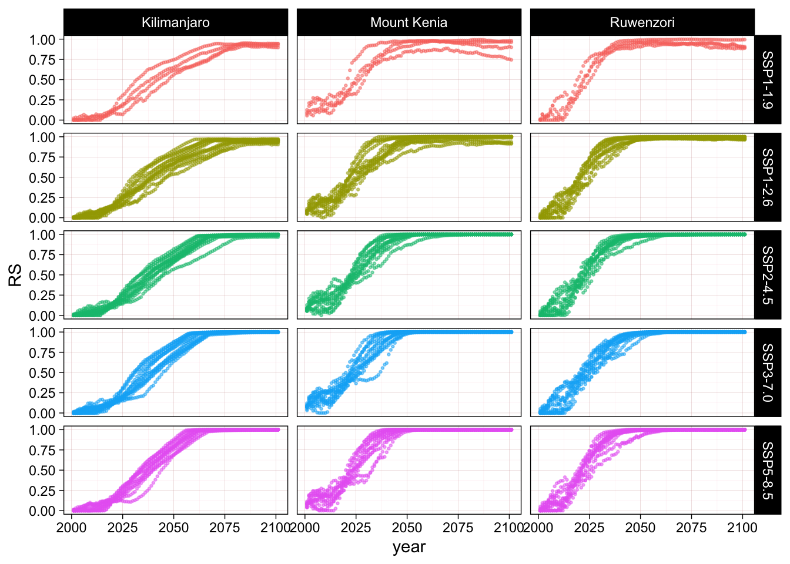
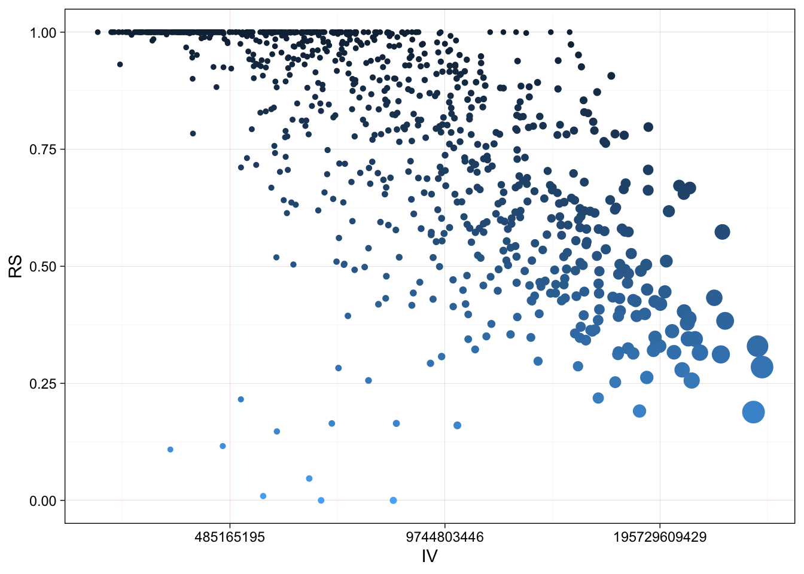

8 Uncertainty of models and scenarios
So far we have looked at relative severity of single units of observation (raster cells or glacier outlines) but we are interested in describing degradation of abiotic conditions in the whole assessment unit.
8.1 Considerations before aggregation
Our two indicator variable differ fundamentally in units and interpretation and we have to consider this when we aggregate the values of RS calculated from the sampling or observation units to larger assessment units. We also have to consider the choice of formula to calculate RS and the interpretation of the collapse threshold in each case.
Sampling units
For our two indicator variables we have different sample sizes per assessment unit. In the case of the dynamic ice mass balance model the units of observation are glacier outlines from the Randolph Glacier Inventory, while in the bioclimatic suitability model the units of observation are cell in a spatial grid that overlap with glacier outlines from multiple sources.
Differences in sample size are noticeable in one assessment units that covers areas of Peru and Chile. The national glacier inventory of Chile include more detail about different ice accumulations types, including rock glaciers, that are not represented in the global inventories.
Interpretation of values and collapse thresholds
The indicator variable of ice mass is a positive variable and represents a physical measurement of mass. For this variable the collapse threshold of \(0 kg\) indicates complete loss of the icy substrate.
For the indicator variable of bioclimatic suitability we are using a probability estimated by the model that requires additional interpretation. We use a confusion matrix to calculate predictive performance of the model and decide the best cut-off value between suitable and unsuitable habitat, and use that cut-off value as an estimate of collapse threshold indicating a shift in suitability conditions.
8.2 RS for the loss of ice mass
Warning: Removed 2424 rows containing missing values (`geom_point()`).


# A tibble: 12 × 4
# Groups: unit_name [12]
unit_name `2011\n2040` `2041\n2070` `2071\n2100`
<fct> <chr> <chr> <chr>
1 Puncak Jaya mod wide very wide very wide
2 Kilimanjaro low low low
3 Mount Kenia mod wide very inter very wide
4 Ruwenzori low high wide very wide
5 Mexico low high wide very wide
6 Sierra Nevada de Santa Marta low low very wide
7 Cordillera de Merida high wide very wide very wide
8 Cordilleras de Colombia low very inter very wide
9 Ecuador low very inter very wide
10 Cordilleras Norte de Peru high inter very inter very wide
11 Cordilleras Orientales de Peru y Boli… high inter very inter very wide
12 Volcanos de Peru y Chile low high wide very wide